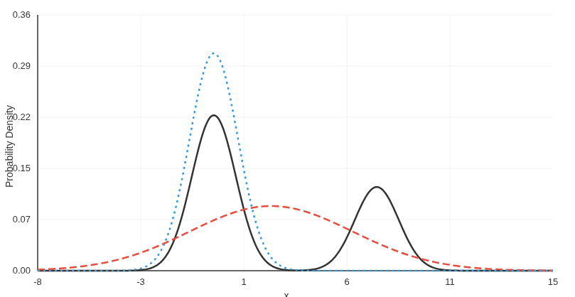
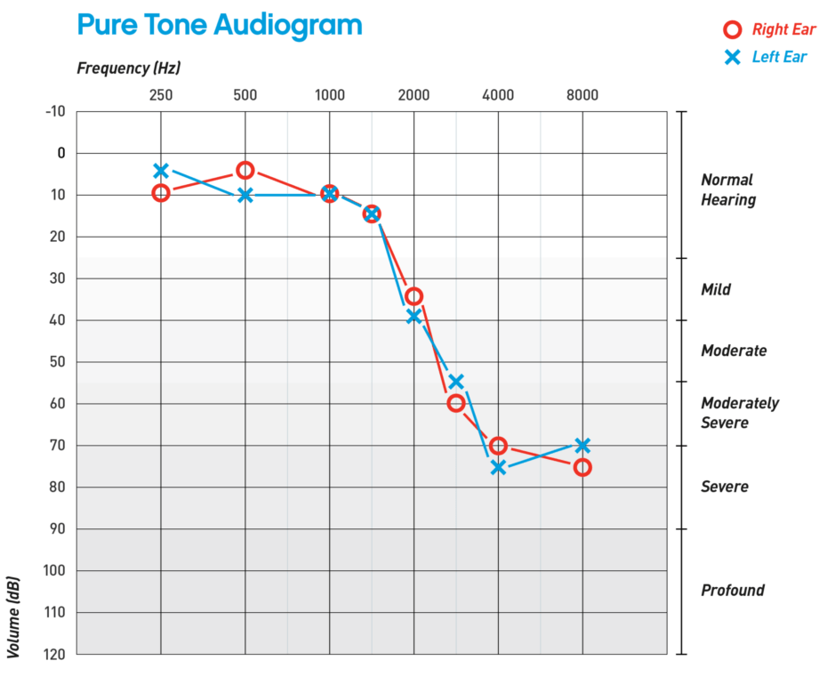

Agentic Programming Languages
How agentic frameworks are reshaping programming — from prompt engineering and declarative paradigms to a new class of constraint-driven languages designed for LLM-powered agents.
Read MoreHow agentic frameworks are reshaping programming — from prompt engineering and declarative paradigms to a new class of constraint-driven languages designed for LLM-powered agents.
Read More
How deterministic laws produce apparent randomness, and what the Bernoulli Map and symbolic dynamics reveal about emergence, the arrow of time, and Poincaré's physical continuum.
Read More
Exploring the fundamental tension in machine learning generalization between mean-seeking and mode-seeking behaviors through forward and reverse KL divergence.
Read MoreAn examination of the philosophical foundations of scientific definitions and the problematic "shut up and calculate" approach in modern physics.
Read More
Exploring the deep connection between logarithmic perception, brain function, and information theory. From Weber-Fechner law to the mathematical structure of consciousness.
Read More